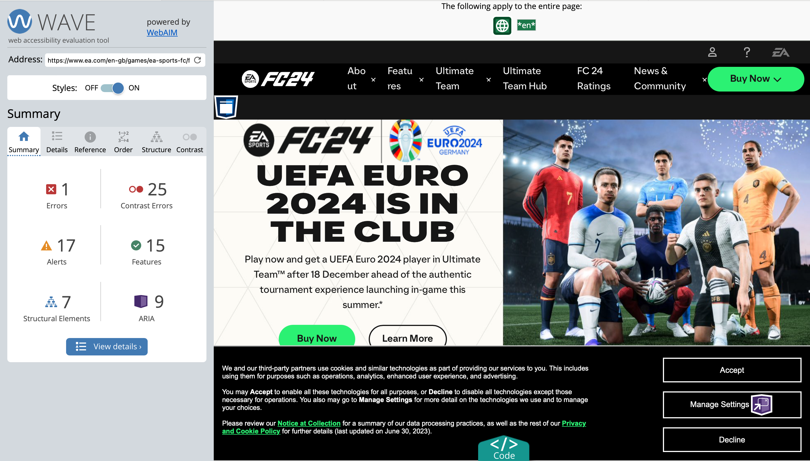
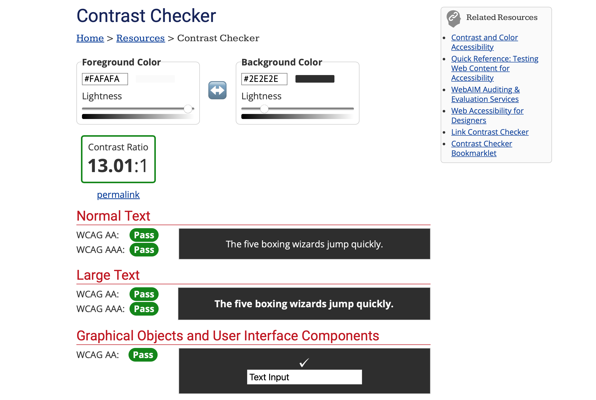
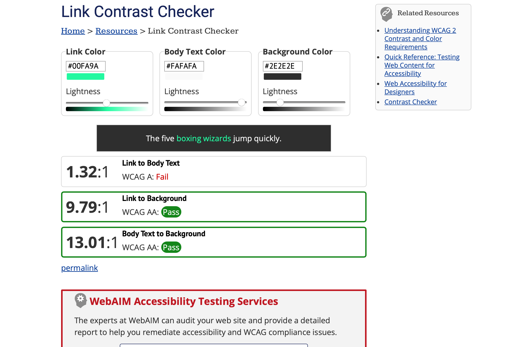
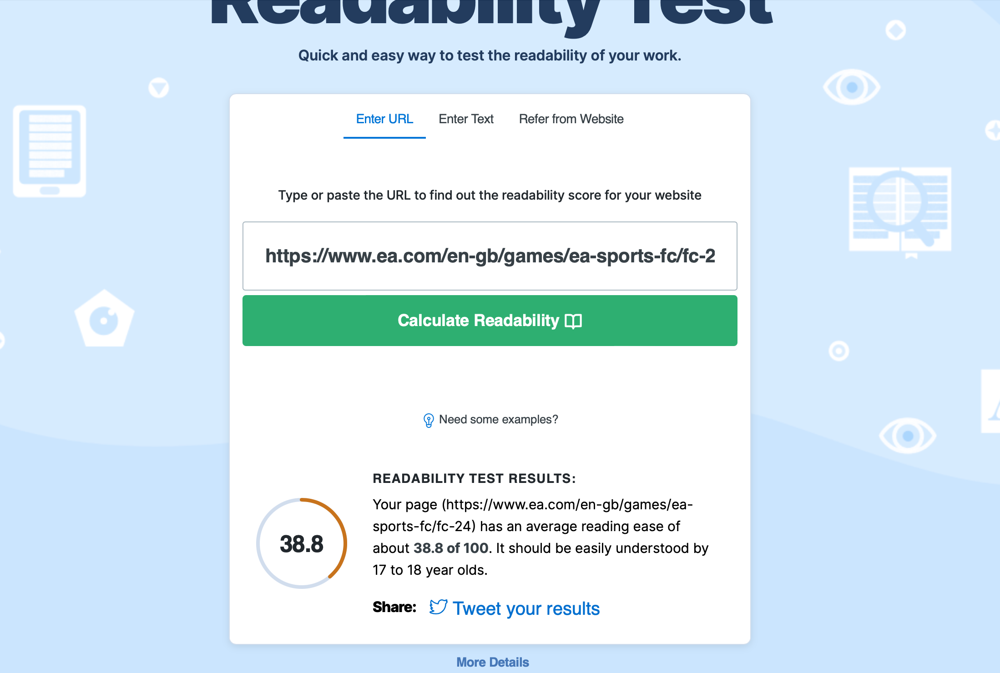

Website: EA Sports new dynamic to FC brand https://www.ea.com/en-gb/games/ea- sports-fc/fc-24
WAVE
WEBAIM CONTRAST CHECKER
WEBAIM LINK CONTRAST CHECKER
WEBFX
Looking at the EA website through the different accessibility tools used in the previous task it’s safe to say the website is overall accessible. The page is easily readable with basic white and black colour contrasts. The images display alternative text for those struggling to process images on their device. Looking at the POUR principles created by W3C we can look at how this page is considered accessible. The page passes as perceivable with non-text content and becomes adapted when need be. The page is operable, with no discomfort when navigating the page. The information is somewhat understandable, we have seen with the webfx tool that the page is designed for 17–18-year-olds language wise. This means anyone younger or older may find the information hard to understand and navigate through. Following these guidelines helps individuals with disabilities access a more inclusive and user-friendly web experience.
For my own website with its basic design, I haven’t taken to the stages yet of considering accessibility with my page. I understand the importance of accessibility in webpages and how prioritising users’ needs when designing my page is important. As I further my page next semester I plan in integrating accessibility deep into my website. My audience is broad and so I want the users who are able to access my page to reflect this. I also plan on embracing different principles to guarantee a consistent experience across various devices.
Captions are primarily designed for viewers who are deaf or hard of hearing. They provide a textual representation of spoken words, as well as other relevant audio information such as background noises or music. Whereas subtitles are intended for viewers who can hear the audio but may not understand the language being spoken in the content. They provide a translation of the dialogue into another language.
For looking forward to MAD (B). I plan on making sure all areas of my website are keyboard accessible and plan on testing the navigation of my page using the tab key to test the visibility of my page. When it comes to designing the page appropriate colour contrast will be a focus and making sure I don’t rely solely on colour to visualise information to users. Any video I hope to provide captions and transcripts for videos to make my content as accessible for users, including buttons also for pause and stop features.